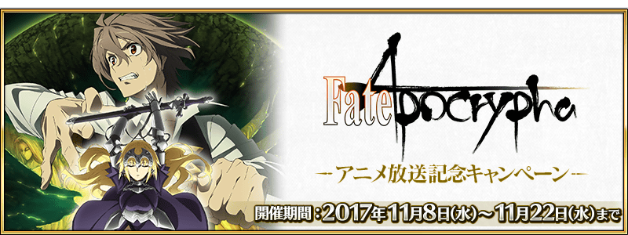
2017年11月8日(三) 17:00～11月22日(三) 11:59的期間，實施「Fate/Apocrypha動畫放送記念宣傳活動」！
◆舉辦期間◆
2017年11月8日(三) 17:00～11月22日(三) 11:59
下述的期間中，7天內連續登入的話，贈送合計聖晶石7個與各職階的銀像1種共計7個！
【11月9日(四) 20:00追記】
由於在11月9日(四)～11月10日(五)期間所設定的特別登入獎勵領取條件有誤，舉辦期間延長如下。
11月9日(四) AM3:00～11月10日(五) AM2:59的修正前未領取到特別登入獎勵的玩家，自11月10日(五) AM3:00之後連續登入的話，能獲得全部的特別登入獎勵。
抱歉帶給對象玩家麻煩。
◆舉辦期間◆
2017年11月9日(四) AM3:00～11月16日(四) AM2:5911月18日(六) AM2:59
※11月10日(五) AM2:59前，連續登入獎勵的領取對話框會顯示舊舉辦期間。
※11/9(四) 20:00修正
| 連続登入天數 | 贈送內容 |
|---|---|
| 第1天 | 聖晶石 1個 Saber銀像 1個 |
| 第2天 | 聖晶石 1個 Archer銀像 1個 |
| 第3天 | 聖晶石 1個 Lancer銀像 1個 |
| 第4天 | 聖晶石 1個 Rider銀像 1個 |
| 第5天 | 聖晶石 1個 Caster銀像 1個 |
| 第6天 | 聖晶石 1個 Assassin銀像 1個 |
| 第7天 | 聖晶石 1個 Berserker銀像 1個 |
※※第1天的登入獎勵會從11月9日(四) AM3:00配發。
※之後的登入獎勵會在每天AM3:00配發。
※連續登入天數中斷的話，無法領取之後的禮物。
※最多能領取7次，但根據開始遊戲的時間點，可能無法到此上限。
迦勒底之門中，通過在下述的期間中出現的「Fate/Apocrypha動畫放送記念宣傳活動」概念禮裝獲得關卡，得到關卡限定的概念禮裝吧！
※請注意在「Fate/Apocrypha動畫放送記念宣傳活動」概念禮裝獲得關卡並無劇本。
◆舉辦期間◆
2017年11月8日(三) 17:00～11月22日(三) 11:59
◆關卡開放條件◆
通過「特異點F 炎上汙染都市 冬木」的Master對象
◆「Fate/Apocrypha動畫放送記念宣傳活動」限定概念禮裝◆
|
★★★★SR |
新開放「★4(SR)阿斯托爾福」的靈衣。
自11月8日(三) 17:00在達文西工房的「魔力稜鏡交換」做為新道具，追加「★4(SR)阿斯托爾福」的靈衣開放權！
◆追加時間◆
2017年11月8日(三) 17:00～
| 追加道具 | 能交換次數 | 必要的魔力稜鏡數 |
|---|---|---|
| 靈衣「トゥリファスでの思い出」開放權 | 1次 |
1000個 |
想開放「★4(SR)阿斯托爾福」的靈衣「於圖利法斯的回憶(トゥリファスでの思い出)」的話，除了靈衣開放權外必須再加上以下的開放條件和素材。 ※在「Fate/Apocrypha動畫放送記念宣傳活動」追加靈衣的Servant只有「★4(SR)阿斯托爾福」。
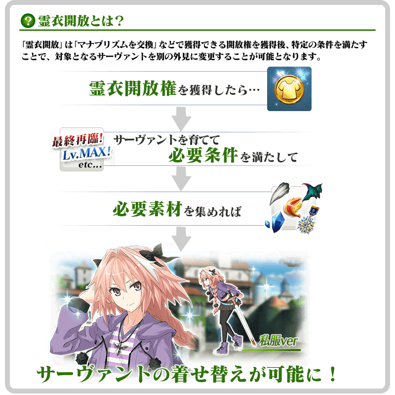
※「靈衣開放」後自動切換戰鬥角色和圖示。若想回到「靈衣開放」前的狀態和變成其他再臨階段的情況，可自Servant詳細畫面變更。
※「靈衣開放」只變更Servant的外觀，職階和能力等並無變化。

「靈衣開放」可自強化畫面選擇。
介紹開放新靈衣「トゥリファスでの思い出」阿斯托爾福的寶具演出！
在Fate/Grand Order官方網站內的公告中，公開了「★4(SR)阿斯托爾福」的寶具演出。敬請確認。
於TV動畫「Fate/Apocrypha」活躍的Servant為對象，強化關卡的AP消耗量以期間限定變成1/2。
※請注意幕間物語及曜日關卡為對象外。
◆舉辦期間◆
期間:2017年11月8日(三) 17:00～11月22日(三) 11:59
◆對象Servant◆
| 職階 | 稀有度 | Servant名 |
|---|---|---|
| Saber | ★★★★ | |
| Archer | ★★★★ | |
| Lancer | ★★★★★ | |
| Rider | ★★★★ | |
| Caster | ★★ | 威廉・莎士比亞 |
| Berserker | ★ | |
| Ruler | ★★★★★ |
◆「Fate/Apocrypha動畫放送記念宣傳活動Pick Up召喚(每日交替)」期間◆
期間:2017年11月8日(三) 17:00～11月22日(三) 11:59
舉辦期間限定「Fate/Apocrypha動畫放送記念宣傳活動Pick Up召喚(每日交替)」！
「★5(SSR)天草四郎」以期間限定登場！
另外，「★5(SSR)莫德雷德(Saber)」「★5(SSR)迦爾納」「★5(SSR)開膛手傑克」「★5(SSR)弗拉德三世(Berserker)」「★5(SSR)貞德(Ruler)」以每日交替Pick Up！
以及「★4(SR)阿斯托爾福」常駐Pick Up。
※天草四郎在Pick Up期間結束後，不會追加到故事召喚。
※莫德雷德(Saber)、迦爾納、開膛手傑克、弗拉德三世(Berserker)、貞德(Ruler)、阿斯托爾福在Pick Up期間結束後也可在故事召喚抽出。
另外，概念禮裝「★5(SSR)聖者の依代」「★4(SR)死霊魔術」「★4(SR)千年黄金樹」「★4(SR)柔らかな慈愛」「★3(R)ブロンズリンク・マニピュレーター」「★3(R)セルフ・ギアス・スクロール」也常駐Pick Up！
※聖者の依代、死霊魔術、千年黄金樹、柔らかな慈愛在Pick Up期間中，也能於故事召喚獲得。
※ブロンズリンク・マニピュレーター在Pick Up期間中，也能於友情點數召喚獲得。
※セルフ・ギアス・スクロール在Pick Up期間中，也能於友情點數召喚獲得。
※セルフ・ギアス・スクロール不會從故事召喚抽出。
詳情請在聖晶石召喚畫面左下的召喚詳細確認。
Pick Up期間中は、期間限定Servant、Pick Up Servant、Pick Up概念禮裝的出現機率提升！
10次召喚中確定1張★4(SR)以上和確定1位★3(R)以上的Servant！
※確定★4(SR)以上包含Servant和概念禮裝。
※所謂「出現機率提升」意指比同稀有度的Servant及概念禮裝出現機率更高的設定。
| 每日交替Pick Up期間 | 每日交替Pick Up內容 |
|---|---|
| 11月8日(三) 17:00～ 11月9日(四) 22:59 |
天草四郎 |
| 11月9日(四) 23:00～11月10日(五) 22:59 | 貞德(Ruler) |
| 11月10日(五) 23:00～11月11日(六) 22:59 | 開膛手傑克 |
| 11月11日(六) 23:00～11月12日(日) 22:59 | 弗拉德三世(Berserker) |
| 11月12日(日) 23:00～11月13日(一) 22:59 | 迦爾納 |
| 11月13日(一) 23:00～11月14日(二) 22:59 | 莫德雷德(Saber) |
| 11月14日(二) 23:00～11月15日(三) 22:59 | 天草四郎 |
| 11月15日(三) 23:00～11月16日(四) 22:59 | 貞德(Ruler) |
| 11月16日(四) 23:00～11月17日(五) 22:59 | 開膛手傑克 |
| 11月17日(五) 23:00～11月18日(六) 22:59 | 弗拉德三世(Berserker) |
| 11月18日(六) 23:00～11月19日(日) 22:59 | 迦爾納 |
| 11月19日(日) 23:00～11月20日(一) 22:59 | 莫德雷德(Saber) |
| 11月20日(一) 23:00～ 11月22日(三) 11:59 |
天草四郎 |
※請注意會以每日交替變更Pick Up的Servant。
介紹天草四郎、莫德雷德(Saber)、迦爾納、開膛手傑克、弗拉德三世(Berserker)、貞德(Ruler)的寶具演出！
在Fate/Grand Order官方網站內的公告中，公開了「★5(SSR)天草四郎」「★5(SSR)莫德雷德(Saber)」「★5(SSR)迦爾納」「★5(SSR)開膛手傑克」「★5(SSR)弗拉德三世(Berserker)」「★5(SSR)貞德(Ruler)」的寶具演出。敬請確認。
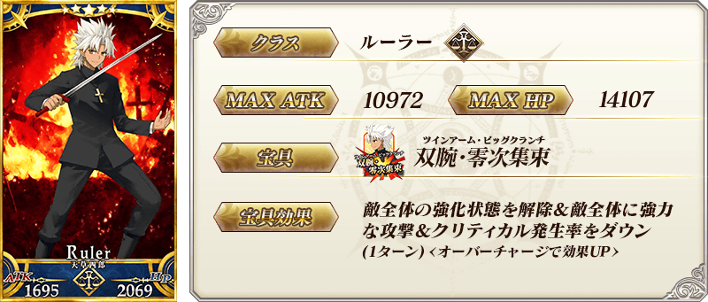

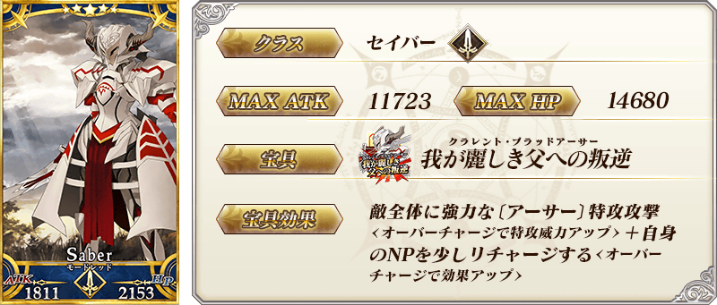
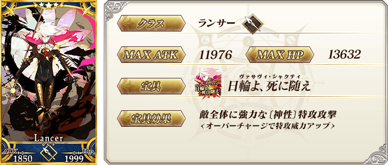
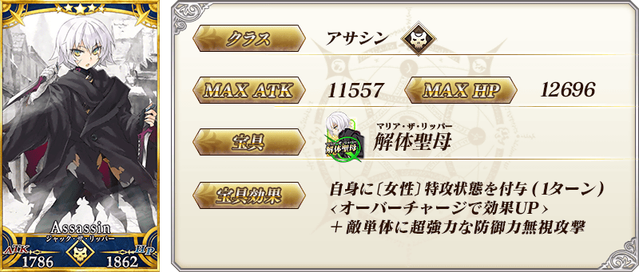

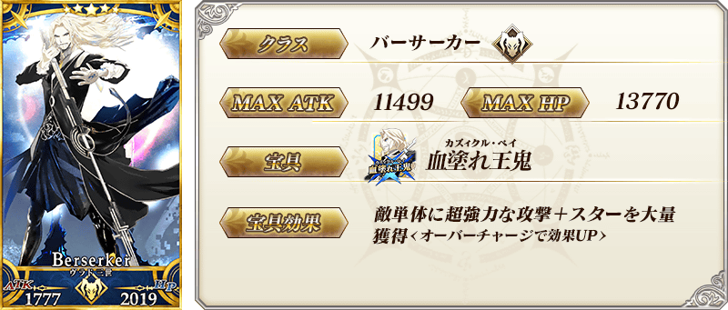

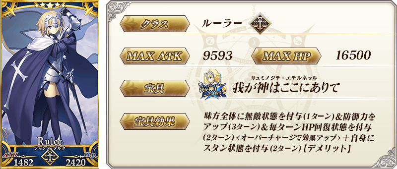
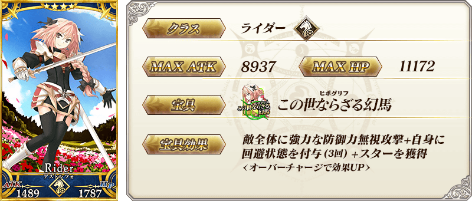
 |
★★★★★SSR |
| 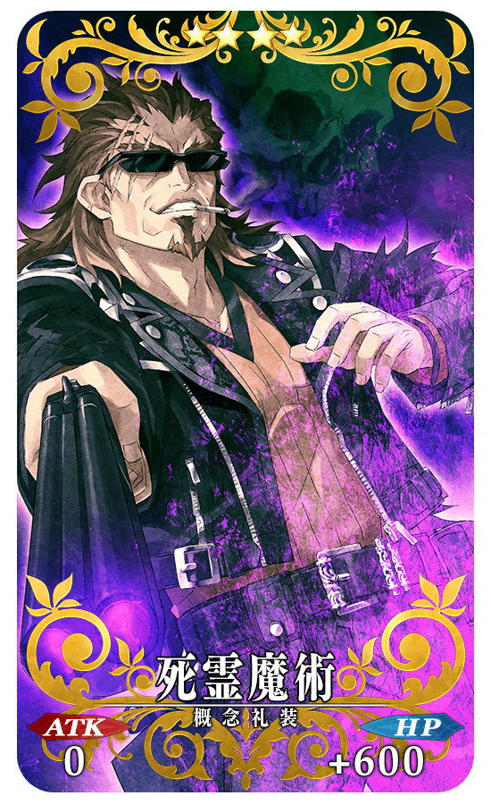 |
★★★★SR |
| 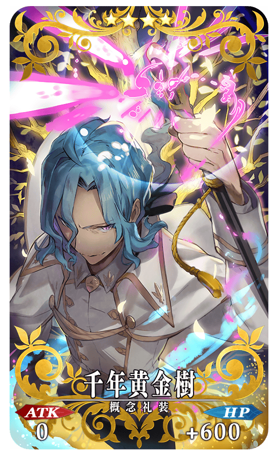 |
★★★★SR |
| 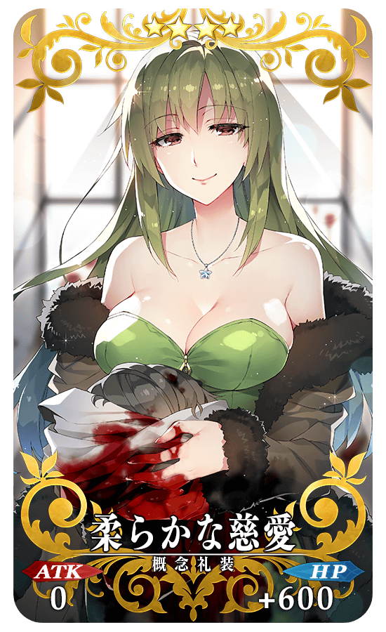 |
★★★★SR |
| 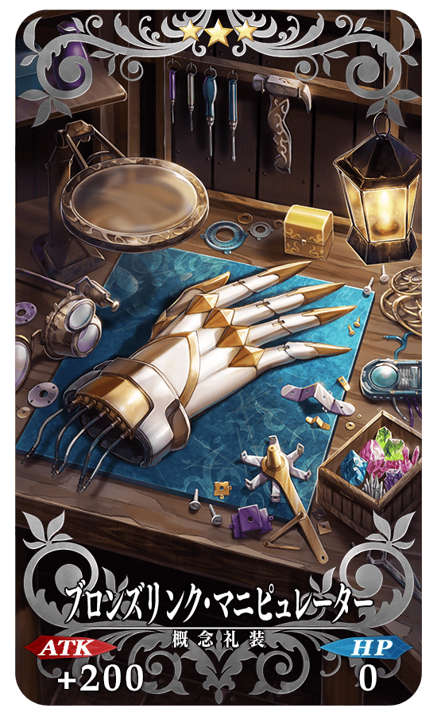 |
★★★R |
| 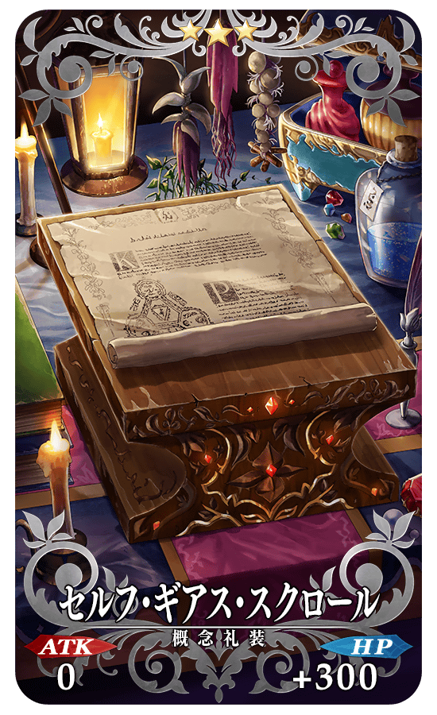 |
★★★R |
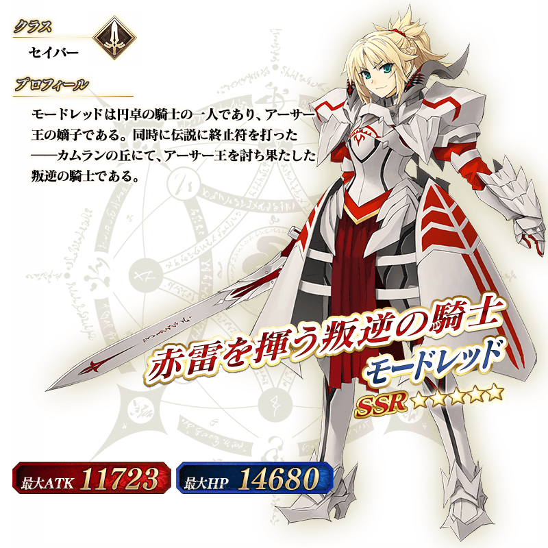
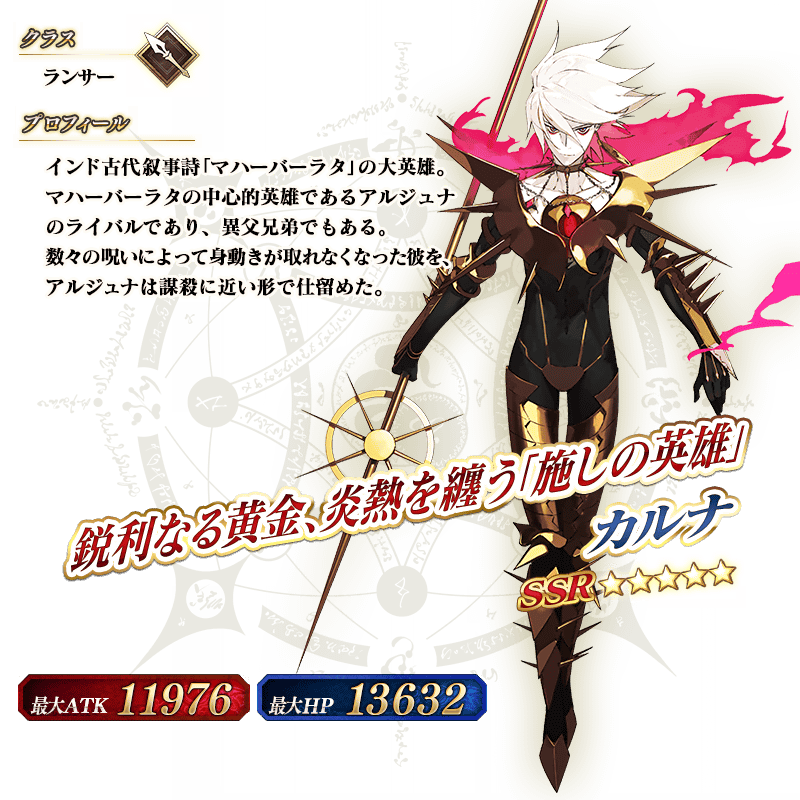
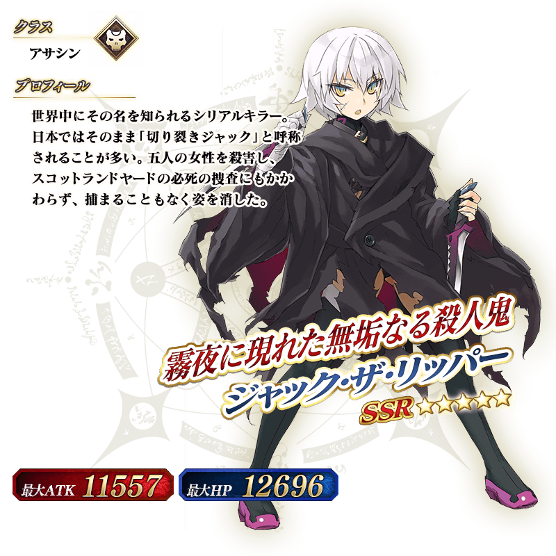
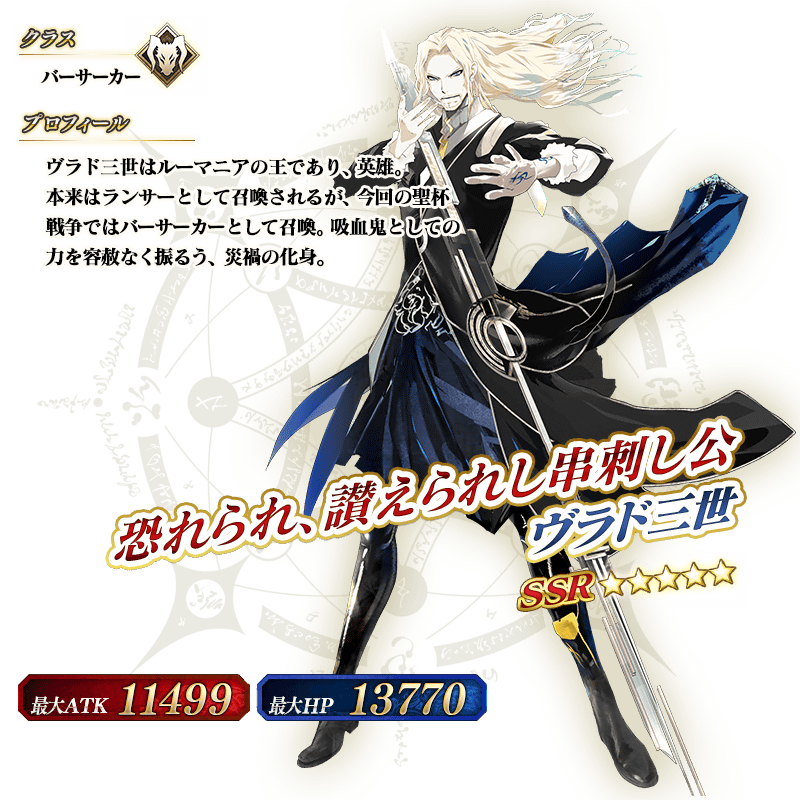